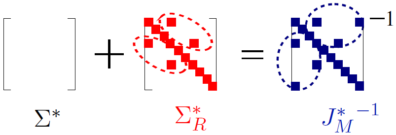

EECS, University of California, Irvine, CA 92697.
Fitting high-dimensional data involves a delicate tradeoff between faithful representation and the use of sparse models. Too often, sparsity assumptions on the fitted model are too restrictive to provide a faithful representation of the observed data. In this project, we present a novel framework incorporating sparsity in different domains.
We decompose the observed covariance matrix into a sparse Gaussian Markov model (with a sparse precision matrix) and a sparse independence model (with a sparse covariance matrix). This is shown in the following model. Our framework incorporates sparse covariance and sparse precision estimation as special cases and thus introduces a richer class of high-dimensional models.
We characterize sufficient conditions for identifiability of the two models, viz., Markov and independence models. We propose an efficient decomposition method based on a modification of the popular $\ell_1$-penalized maximum-likelihood estimator ($\ell_1$-MLE). We establish that our estimator is consistent in both the domains, i.e., it successfully recovers the supports of both Markov and independence models, where the number of samples could be much more than the number of variables (high dimensional regime). Our experiments validate these results and also demonstrate that our models have better inference accuracy under simple algorithms such as loopy belief propagation. The proposed algorithm was also applied to the "foreign exchange rate" and "stock market returns" data sets. Detailed results can be found in the following paper.
“High-Dimensional Covariance Decomposition into Sparse Markov
and Independence Domains. ” by M. Janzamin and A. Anandkumar. Preprint, Feb. 2012. An abridged version appears in the Proc. of ICML, June 2012.
Download: PDF. ICML-version. Slides.